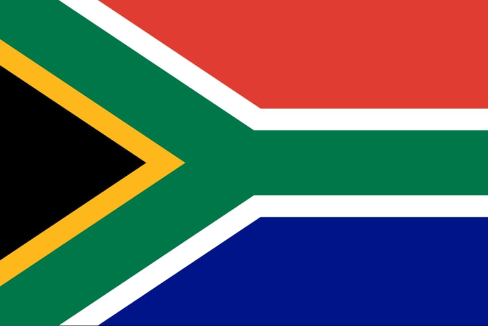

About Me
My name is Msebeyenjabulo, but I go by Msebe because it's shorter. I'm born and raised in South Africa and have lived in KwaZulu-Natal all my life. I'm currently working towards getting my bachelor's degree in Computer Programming. I started programming as a hobby, just to learn something new that would challenge me, and then I fell in love with it. Then, when I was presented with the opportunity to get a qualification in something I was enjoying, I jumped at it.
My Country
South Africa, the land of breathtaking landscapes and diverse cultures! From the vibrant streets of Johannesburg to the scenic beauty of Cape Town, there's always something to explore. Enjoy a braai with friends, spot the Big Five on a safari, and experience the rich history and warm hospitality that make this country truly special. South Africa is where adventure and beauty meet.